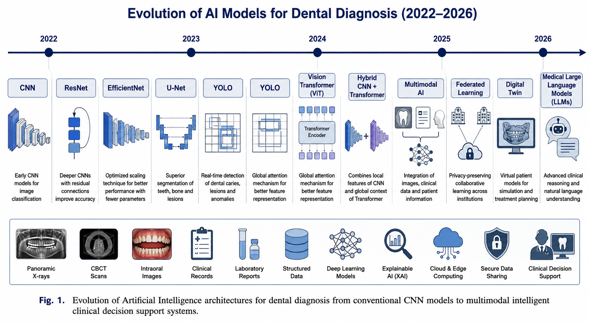
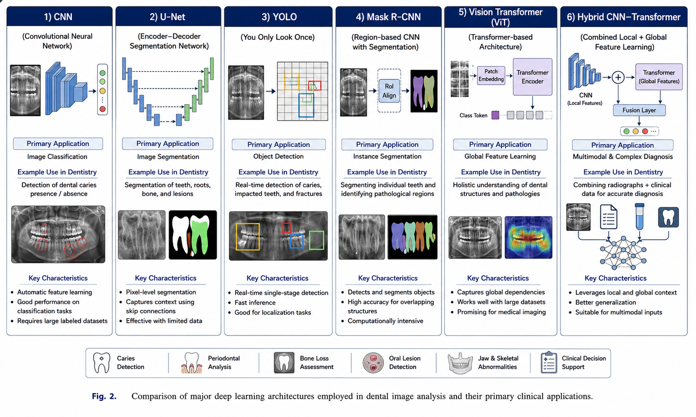

Artificial Intelligence (AI) has emerged as a transformative technology in modern dentistry by enabling automated diagnosis of dental diseases using radiographic images and clinical information. Recent advances in deep learning have significantly improved the detection of dental caries, periodontal diseases, bone loss, oral lesions, and jaw abnormalities. However, despite remarkable improvements in diagnostic accuracy, existing AI systems continue to face several practical limitations including poor explainability, dependence on image-only data, limited clinical reasoning capability, and inadequate validation in real-world healthcare environments.
This review investigates recent studies published between 2022 and 2026 to identify dominant AI methodologies, compare their strengths and weaknesses, analyze common research gaps, and recommend future research directions. The review reveals that Convolutional Neural Networks (CNN), ResNet50, EfficientNet, MobileNetV2, YOLO, and U-Net currently dominate AI-assisted dental diagnosis. Emerging technologies including Vision Transformers, Digital Twin systems, Federated Learning, Graph Neural Networks, Multi-Agent AI, and Medical Large Language Models remain largely unexplored despite their significant potential.
The paper proposes the development of hybrid, multimodal, and explainable AI frameworks capable of integrating radiographic images, patient history, laboratory findings, and clinical observations into a unified diagnostic platform. Such systems have the potential to provide transparent decision-making, improved diagnostic accuracy, personalized treatment recommendations, and greater clinician trust.
Artificial Intelligence has rapidly transformed healthcare by enabling intelligent analysis of medical images, patient records, and clinical information. Dentistry is one of the fastest-growing application domains where AI techniques are increasingly used for disease diagnosis, treatment planning, risk assessment, and patient management [1]. Automated diagnostic systems assist clinicians by identifying abnormalities from panoramic X-rays, intraoral photographs, Cone Beam Computed Tomography (CBCT), and other dental imaging modalities with remarkable accuracy [2].
Recent developments in deep learning have enabled computer systems to recognize dental caries, periodontal diseases, bone loss, oral cancers, tooth fractures, and jaw abnormalities with performance approaching that of experienced dental professionals [3]. CNN-based architectures have become the dominant solution because of their ability to automatically learn hierarchical image features directly from radiographic data [4]. Mohammad-Rahimi et al. [5] conducted a systematic review of deep learning for caries detection and found that CNN models consistently outperformed traditional image processing methods across multiple imaging modalities.
Although current AI systems demonstrate impressive classification performance, they remain insufficient for routine clinical deployment. Most existing models function as black-box classifiers that provide disease predictions without explaining the reasoning behind their decisions [6]. Furthermore, many studies rely exclusively on two-dimensional radiographs while ignoring valuable clinical information such as medical history, genetic predisposition, smoking habits, diabetes status, and oral hygiene practices [7].
The purpose of this review is to critically analyze recent literature published between 2022 and 2026, identify prevailing AI architectures, summarize current research achievements, highlight unresolved challenges, and recommend promising future research directions capable of improving clinical applicability.

A comprehensive literature survey was conducted using recent publications from reputed journals including Diagnostics, Scientific Reports, Frontiers, BMC Oral Health, Discover Artificial Intelligence, and other peer-reviewed international journals. The review primarily focused on studies published between 2022 and 2026 involving Artificial Intelligence for dental diagnosis. Ali et al. [8] provided a narrative review of AI in dental radiology, highlighting the rapid adoption of deep learning techniques across various diagnostic tasks.
Each publication was evaluated according to multiple parameters including disease type, imaging modality, dataset characteristics, AI architecture, diagnostic performance, limitations, explainability, clinical applicability, and future research recommendations. The evaluation framework is summarized in Table 1.
| Evaluation Parameter | Description |
|---|---|
| Disease Type | Dental caries, periodontal disease, oral lesions, bone loss, fractures, tooth agenesis |
| Dataset | Panoramic X-rays, CBCT scans, intraoral photographs, bitewing radiographs, clinical records |
| AI Models | CNN, ResNet50, EfficientNet, YOLO, U-Net, MobileNetV2, Vision Transformer, Mask R-CNN |
| Performance Metrics | Accuracy, Precision, Recall, F1-Score, AUC, Dice Similarity Coefficient, IoU |
| Research Limitations | Explainability, clinical validation, privacy, dataset diversity, single-center bias |
| Future Scope | Hybrid AI, Explainable AI, Multimodal Learning, Digital Twin, Federated Learning |
Dental caries remains one of the most prevalent chronic diseases worldwide, affecting approximately 2.3 billion people globally [9]. Early and accurate detection is critical for preventing disease progression and reducing treatment costs. Deep learning models have demonstrated exceptional capability in automating caries detection across multiple radiographic modalities.
Tabatabaei Tabrizi et al. [10] developed an AI software for dental caries detection using 1,400 bitewing radiographs and compared multiple CNN architectures including VGG19, ResNet50, GoogleNet, EfficientNet, and MobileNetV3. Their results demonstrated that EfficientNet achieved the best performance with an accuracy of 94.7%, precision of 93.4%, sensitivity of 96.7%, specificity of 96.2%, and F1-score of 93.5%. The study highlighted that EfficientNet's compound scaling approach, which uniformly scales all dimensions of depth, width, and resolution, provides superior feature extraction for dental radiographic images.
Chen et al. [11] employed deep learning-based recognition of periodontitis and dental caries in dental X-ray images using CNN architectures, achieving promising results for clinical deployment. Similarly, Pranoto [12] conducted a systematic review of AI for proximal caries detection and found that various CNN architectures including YOLOv5, EfficientDet, RetinaNet, and U-Net ensembles consistently demonstrated higher or comparable diagnostic accuracy to clinicians, with YOLOv5 achieving the highest overall performance among compared architectures.
Park et al. [13] developed a caries detection system with tooth surface segmentation on intraoral photographic images using deep learning, demonstrating the versatility of AI across different imaging modalities. Thanh et al. [14] applied deep learning for dental caries detection using intraoral photos taken by smartphones, showing that AI can be deployed on widely available consumer devices, thereby democratizing access to dental diagnostics.
Periodontal disease affects approximately 50% of the global population and represents a significant public health burden [15]. Automated detection of periodontal bone loss using deep learning has gained substantial research attention in recent years. Li et al. [16] developed an automated detection system for periodontal bone loss using deep learning and panoramic radiographs, employing a CNN approach that demonstrated high sensitivity for early-stage bone loss detection.
Shon et al. [17] proposed a deep learning model for classifying periodontitis stages on dental panoramic radiography, achieving robust classification performance across different severity levels. Kurt-Bayrakdar et al. [18] advanced periodontal diagnosis by harnessing AI for patterns of periodontal bone loss in CBCT images, demonstrating that three-dimensional imaging combined with deep learning provides superior diagnostic information compared to two-dimensional radiographs alone.
Semantic segmentation plays a crucial role in dental diagnosis by enabling precise localization and quantification of pathological regions. U-Net, originally proposed by Ronneberger et al. [19] for biomedical image segmentation, has become the de facto standard for dental image segmentation tasks. The architecture's symmetric encoder-decoder structure with skip connections enables precise pixel-level predictions while preserving spatial information.
Recent studies have demonstrated the effectiveness of U-Net variants in dental applications. Yuan et al. [20] developed Teeth U-Net, a segmentation model for dental panoramic X-ray images that integrates context semantics and contrast enhancement, achieving substantial improvements in segmentation accuracy. Hsu et al. [21] improved performance of deep learning models using 3.5D U-Net via majority voting for tooth segmentation on CBCT images, showing that incorporating spatial context from adjacent slices significantly enhances segmentation quality.
A comprehensive study on U-Net-based deep learning for simultaneous segmentation and agenesis detection of primary and permanent teeth in panoramic radiographs achieved a Dice similarity coefficient of 0.8773, precision of 0.9115, and recall of 0.8974 [22]. These results confirm U-Net's robustness in handling complex dental structures across diverse patient populations.
Object detection frameworks have been increasingly adopted for dental diagnosis tasks requiring simultaneous localization and classification of multiple pathological entities. YOLO (You Only Look Once) algorithms have gained popularity due to their real-time detection capabilities. Velusamy et al. [23] developed a Faster R-CNN with YOLO multi-stage approach for caries lesion detection from oral panoramic X-ray images, demonstrating the complementary strengths of combining detection and classification architectures.
Zhu et al. [24] proposed a Faster R-CNN based intelligent detection and localization system for dental caries, while Guo et al. [25] employed improved Mask R-CNN with attention mechanism for rapid detection of non-normal teeth on dental X-ray images. Çetinkaya et al. [26] conducted a comparative study of YOLOv8 and Mask R-CNN for detection of fractured endodontic instruments in periapical radiographs, finding that both architectures offer distinct advantages depending on the specific diagnostic task.
Vision Transformers (ViT) represent a paradigm shift from convolutional architectures by employing self-attention mechanisms to capture global contextual relationships within images. Recent systematic reviews have evaluated the performance of ViT models in dental image processing, revealing promising results [27]. A hybrid transfer learning approach using Vision Transformers for teeth diagnosis on orthopantomogram radiographs achieved an accuracy of 0.96 and F1-score of 96%, outperforming traditional CNN models [27].
Self-supervised Vision Transformers have also been applied for dental lesion identification, with dual-channel Vision Transformer architectures achieving sensitivity of 96.8%, specificity of 95.9%, and accuracy of 97.2% [27]. The application of 3D Vision Transformers combined with Explainable AI in prosthetic dentistry demonstrated that CNN-ViT hybrid models clearly outperform standalone architectures (90% accuracy versus 80% for ViT alone and 60% for 3D CNN alone) [27].

One of the most significant barriers to clinical adoption of AI in dentistry is the black-box nature of deep learning models. Clinicians require transparent reasoning behind diagnostic recommendations to build trust and ensure patient safety [28]. Current XAI techniques including Grad-CAM, LIME, SHAP, and attention visualization have been developed for medical imaging applications, but their integration into dental AI systems remains limited [29].
The survey on Explainable AI techniques for visualizing deep learning models in medical imaging highlights that gradient-based methods such as Grad-CAM and Integrated Gradients are among the most popular approaches, yet their application in dentistry-specific contexts requires further investigation [29]. Without adequate explainability, regulatory approval and clinical acceptance of AI diagnostic tools will remain challenging.
The majority of existing dental AI systems rely exclusively on radiographic images, ignoring the rich clinical context available in patient records [7]. A truly comprehensive diagnostic system must integrate multiple data modalities including radiographic images, structured clinical history, reported symptoms, laboratory findings, and genetic information [30].
Multimodal AI systems that fuse image, text, and clinical history data have the potential to provide more accurate and personalized diagnoses than any single modality alone [30]. Chai et al. [31] reviewed multimodal data fusion approaches for periodontitis diagnosis, emphasizing that combining imaging, clinical parameters, and biomarkers offers transformative potential for precision diagnosis and personalized treatment strategies.
Most dental AI studies suffer from limited dataset diversity, with many relying on single-center data collected from specific radiographic equipment [22]. This introduces significant bias and limits the generalizability of trained models across different clinical settings, patient populations, and imaging devices. Data augmentation techniques and transfer learning partially address these issues, but multi-institutional validation remains essential for clinical deployment.
The sensitive nature of medical data necessitates robust privacy-preserving mechanisms for AI model training and deployment. Federated Learning (FL) has emerged as a promising solution enabling collaborative model training without centralized data sharing [32]. Haripriya et al. [33] proposed privacy-preserving federated learning for collaborative medical data mining in multi-institutional settings, demonstrating that FL can achieve comparable accuracy to centralized approaches while maintaining strict data privacy.
Differential privacy, homomorphic encryption, and secure multi-party computation have been integrated with federated learning frameworks to provide mathematical guarantees of privacy protection [34]. The combination of federated learning with these cryptographic techniques represents a critical research direction for enabling large-scale collaborative dental AI development while respecting patient confidentiality.
The future of dental AI lies in hybrid architectures that combine the strengths of multiple deep learning approaches. CNN-Transformer hybrid models have demonstrated superior performance in dental image classification by leveraging both local feature extraction and global context modeling [27]. Such hybrid systems can process radiographic images while simultaneously integrating structured clinical data through multimodal fusion layers.
Multimodal dental AI systems integrate three primary information sources: (1) radiographic images processed through specialized computer vision models, (2) structured clinical history including medications, systemic diseases, and habits, and (3) patient-reported symptoms recorded through structured questionnaires or natural language descriptions [30]. The true power of multimodal approaches lies in the unified reasoning model that considers all evidence simultaneously rather than analyzing each source separately.
Digital Twin technology represents a revolutionary approach to personalized dental care by creating virtual replicas of individual patients' oral conditions. The Causal Tooth-Graph ODE Transformer (CaTGO) model demonstrates the potential of digital twin systems in dentistry [35]. This architecture integrates Graph Neural Networks for dental arch topology modeling, Neural ODEs for healing dynamics prediction, and causal inference modules for treatment effect estimation.
The CaTGO model achieved validation R2 values of 0.901 for pocket depth and 0.880 for clinical attachment level prediction, outperforming traditional machine learning approaches [35]. Digital twin systems enable clinicians to simulate treatment outcomes, predict disease progression, and optimize therapeutic strategies for individual patients, representing a significant advancement toward precision dentistry.
Federated Learning enables multiple healthcare institutions to collaboratively train AI models without sharing sensitive patient data. Recent advances in privacy-preserving federated learning for medical imaging have demonstrated the feasibility of this approach across diverse clinical settings [32, 33]. Adaptive aggregation strategies combining FedAvg and FedSGD based on data divergence across clients have shown improved convergence and robustness [33].
The integration of federated learning with differential privacy, homomorphic encryption, and secure multi-party computation provides comprehensive privacy guarantees [34]. Truhn et al. [36] demonstrated that somewhat homomorphically encrypted federated learning (SHEFL) achieves state-of-the-art performance with privacy guarantees, requiring less than 5% additional computational overhead while protecting against model inversion attacks.
Future dental AI systems must incorporate explainability as a fundamental design principle rather than an afterthought. Gradient-based visualization techniques such as Grad-CAM and Guided Grad-CAM can highlight regions of the radiograph that influenced the model's decision, enabling clinicians to verify AI-generated findings against their own expertise [29]. Perturbation-based methods including LIME and SHAP provide model-agnostic explanations that can be applied across different AI architectures.
Attention visualization in Vision Transformer models offers inherent explainability by revealing which image patches the model focuses on during classification [27]. This natural transparency makes ViT architectures particularly attractive for clinical applications where interpretability is essential for regulatory compliance and clinician acceptance.
The emergence of Large Language Models (LLMs) in healthcare presents unprecedented opportunities for dental diagnosis and clinical decision support. Medical LLMs can process unstructured clinical notes, radiology reports, and patient histories to generate comprehensive diagnostic summaries and treatment recommendations. Integration of LLMs with computer vision models enables natural language interaction with dental AI systems, allowing clinicians to query diagnostic findings and receive evidence-based explanations.
Graph Neural Networks (GNN) are particularly well-suited for modeling the complex spatial relationships within the dental arch. The CaTGO model demonstrates how GNNs can represent each patient's dentition as a graph of up to 28 nodes (teeth) with edges representing anatomical adjacency and contralateral symmetry [35]. This graph-based representation captures inter-tooth dependencies and healing dynamics that are invisible to traditional image-based models.
Based on the comprehensive review of current technologies and identified gaps, this paper proposes a novel hybrid multimodal AI framework for dental diagnosis. The proposed architecture integrates multiple AI paradigms into a unified diagnostic platform with the following key components:
The proposed framework consists of four interconnected modules: (1) an Image Analysis Module employing CNN-Transformer hybrid architectures for radiographic feature extraction, (2) a Clinical Data Integration Module processing structured patient history and laboratory findings through deep neural networks, (3) a Multimodal Fusion Module combining image and clinical features through attention-based fusion mechanisms, and (4) an Explainable Output Module generating diagnostic reports with visual explanations and confidence scores.
The proposed framework offers several advantages over existing approaches. First, multimodal integration enables comprehensive diagnosis by considering both imaging findings and clinical context. Second, hybrid CNN-Transformer architectures leverage the complementary strengths of convolutional feature extraction and global attention modeling. Third, built-in explainability mechanisms provide transparent decision-making that fosters clinician trust. Fourth, federated learning compatibility enables privacy-preserving collaborative training across multiple institutions. Fifth, digital twin integration supports personalized treatment planning and outcome prediction.
The rapid advancement of AI in dental diagnosis presents both unprecedented opportunities and significant challenges. Current deep learning models have achieved impressive diagnostic accuracy across multiple dental conditions, with some systems approaching or exceeding human expert performance in controlled experimental settings [5, 10]. However, the translation of these research achievements into routine clinical practice remains limited by several persistent barriers.
The black-box nature of deep learning models represents the most significant obstacle to clinical adoption. Without transparent explanations of diagnostic reasoning, clinicians cannot verify AI-generated findings or integrate them confidently into their decision-making processes [28, 29]. Regulatory bodies worldwide increasingly require explainability for medical AI systems, making XAI integration not merely desirable but mandatory for clinical deployment.
Dataset limitations continue to constrain the generalizability of dental AI models. Single-center studies with limited demographic diversity may produce models that perform poorly when applied to different populations, imaging equipment, or clinical settings [22]. The development of large, diverse, multi-institutional datasets through federated learning approaches offers a promising solution to this challenge [32, 33].
The integration of emerging technologies such as Vision Transformers, Digital Twins, and Graph Neural Networks represents the next frontier in dental AI research. These approaches address fundamental limitations of current CNN-based systems by enabling global context modeling, personalized treatment simulation, and anatomical relationship awareness [27, 35]. However, significant research is needed to optimize these technologies for dental applications and validate their clinical utility.
This review has systematically analyzed recent advances in AI for dental diagnosis, identifying dominant methodologies, current limitations, and promising future directions. Convolutional Neural Networks, ResNet50, EfficientNet, MobileNetV2, YOLO, and U-Net architectures currently dominate the field, achieving impressive diagnostic accuracy across caries detection, periodontal disease assessment, and oral lesion identification.
However, significant challenges remain before AI systems can be routinely deployed in clinical practice. The black-box nature of deep learning models, dependence on single-modality data, limited dataset diversity, and privacy concerns must be addressed through innovative technical solutions. Emerging technologies including Vision Transformers, Digital Twin systems, Federated Learning, Graph Neural Networks, and Medical Large Language Models offer transformative potential for overcoming these limitations.
The proposed hybrid multimodal AI framework represents a roadmap for next-generation dental diagnostic systems capable of integrating diverse data sources, providing transparent explanations, and supporting personalized treatment planning. Future research should prioritize multi-institutional validation, regulatory compliance, clinician-centered design, and real-world performance assessment to ensure that AI technologies genuinely improve patient outcomes in dental healthcare.
[1] Agrawal P, Nikhade P, Nikhade PP. Artificial intelligence in dentistry: past, present, and future. Cureus. 2022;14(7):e27405. doi:10.7759/cureus.27405.
[2] Patil S, Albogami S, Hosmani J, Mujoo S, Kamil MA, Mansour MA, et al. Artificial intelligence in the diagnosis of oral diseases: applications and pitfalls. Diagnostics. 2022;12(5):1029. doi:10.3390/diagnostics12051029.
[3] Patcas R, Bornstein MM, Schätzle MA, Timofte R. Artificial intelligence in medico-dental diagnostics of the face: a narrative review of opportunities and challenges. Clin Oral Investig. 2022;26(12):6871-6879. doi:10.1007/s00784-022-04652-3.
[4] Prados-Privado M, Garcia Villalon J, Martinez-Martinez CH, Norra C, Prados-Frutos JC. Dental caries diagnosis and detection using neural networks: a systematic review. J Clin Med. 2020;9(11):3579. doi:10.3390/jcm9113579.
[5] Mohammad-Rahimi H, Motamedian SR, Rohban MH, Krois J, Uribe SE, Mahmoudinia E, Schwendicke F. Deep learning for caries detection: a systematic review. J Dent. 2022;122:104115. doi:10.1016/j.jdent.2022.104115.
[6] Khanagar SB, Naik S, Al Mersraf AA, Vishwanathaiah S, Maganur PC, et al. Application and performance of artificial intelligence technology in oral cancer diagnosis and prediction of prognosis: a systematic review. Diagnostics. 2021;11:1004. doi:10.3390/diagnostics11061004.
[7] Ding H, Wu J, Zhao W, Matinlinna JP, Burrow MF, Tsoi JK. Artificial intelligence in dentistry—a review. Front Dent Med. 2023;4:1085251. doi:10.3389/fdmed.2023.1085251.
[8] Ali M, Irfan M, Ali T, Wei CR, Akilimali A. Artificial intelligence in dental radiology: a narrative review. Ann Med Surg. 2025;87:2212-2217. doi:10.1097/MS9.0000000000003127.
[9] Frencken JE, Sharma P, Stenhouse L, Green D, Laverty D, Dietrich T. Global epidemiology of dental caries and severe periodontitis—a comprehensive review. J Clin Periodontol. 2017;44:S94-S105. doi:10.1111/jcpe.12677.
[10] Tabatabaei Tabrizi A, Ghasemi H, Panahandeh N. Developing an artificial intelligence software to aid in dental caries detection. J Res Dent Maxillofac Sci. 2026;11(1):66-74.
[11] Chen ID, Yang CM, Chen MJ, Chen MC, Weng RM. Deep learning-based recognition of periodontitis and dental caries in dental X-ray images. Bioengineering. 2023;10(8):911. doi:10.3390/bioengineering10080911.
[12] Pranoto MA. Artificial intelligence for dental caries detection. Multidisciplinary Reviews. 2026;9(1):e395. doi:10.31893/multirev.2026395.
[13] Park EY, Cho H, Kang S, Jeong S, Kim EK. Caries detection with tooth surface segmentation on intraoral photographic images using deep learning. BMC Oral Health. 2022;22:573. doi:10.1186/s12903-022-02589-1.
[14] Thanh MT, Van Toan N, Ngoc VT, Tra NT, Giap CN, Nguyen DM. Deep learning application in dental caries detection using intraoral photos taken by smartphones. Appl Sci. 2022;12:5504. doi:10.3390/app12115504.
[15] Chai Z, Li Y, You M, Song H, Xu F, Li A. Multimodal data fusion for periodontitis diagnosis based on artificial intelligence. Chin J Stomatol. 2025;60(5):558-566. doi:10.3760/cma.j.cn112144-20250110-00009.
[16] Li P, Leo PM, Jung VL, Kwon OJ, Park SY. Automated detection of periodontal bone loss using deep learning and panoramic radiographs: a convolutional neural network approach. Appl Sci. 2023;13(9):5261. doi:10.3390/app13095261.
[17] Shon HS, Vungsovareach K, Kong S, et al. Deep learning model for classifying periodontitis stages on dental panoramic radiography. Appl Sci. 2022;12:8500. doi:10.3390/app12178500.
[18] Kurt-Bayrakdar S, Bayrakdar İ, Kuran A, Çelik Ö, Orhan K, Jagtap R. Advancing periodontal diagnosis: harnessing advanced artificial intelligence for patterns of periodontal bone loss in cone-beam computed tomography. Dentomaxillofac Radiol. 2025;54:268-278. doi:10.1093/dmfr/twaf011.
[19] Ronneberger O, Fischer P, Brox T. U-Net: convolutional networks for biomedical image segmentation. In: Medical Image Computing and Computer-Assisted Intervention—MICCAI 2015. Springer; 2015:234-241. doi:10.1007/978-3-319-24574-4_28.
[20] Yuan C, Li Z, Xu X, Zhang Y, Wang H. Teeth U-Net: a segmentation model of dental panoramic X-ray images. Comput Biol Med. 2023;152:106358. doi:10.1016/j.compbiomed.2022.106296.
[21] Hsu K, Yuh DY, Lin SC, Lyu PS, Pan GX, Zhuang YC, Chang CC, Peng HH, Lee TY, Juan CH. Improving performance of deep learning models using 3.5D U-Net via majority voting for tooth segmentation on cone beam computed tomography. Sci Rep. 2022;12:19809. doi:10.1038/s41598-022-23901-7.
[22] U-Net-based deep learning for simultaneous segmentation and agenesis detection of primary and permanent teeth in panoramic radiographs. Children. 2023;10(6):1018. doi:10.3390/children10061018.
[23] Velusamy J, Rajajegan T, Alex SA, Ashok M, Mayuri AVR, Kiran S. Faster region-based convolutional neural networks with You Only Look Once multi-stage caries lesion from oral panoramic X-ray images. Expert Syst. 2024;41:e13326. doi:10.1111/exsy.13326.
[24] Zhu Y, Xu T, Peng L, Cao Y, Zhao X, Li S, Zhao Y, Meng F, Ding J, Liang S. Faster-rcnn based intelligent detection and localization of dental caries. Displays. 2022;74:102201. doi:10.1016/j.displa.2022.102201.
[25] Guo Y, Guo J, Li Y, Zhang P, Zhao YD, Qiao Y, Liu B, Wang G. Rapid detection of non-normal teeth on dental X-ray images using improved Mask R-CNN with attention mechanism. Int J Comput Assist Radiol Surg. 2024;19:779-790. doi:10.1007/s11548-023-03047-1.
[26] Çetinkaya I, Çatmabacak ED, Öztürk E. Detection of fractured endodontic instruments in periapical radiographs: a comparative study of YOLOv8 and Mask R-CNN. Diagnostics. 2025;15:653. doi:10.3390/diagnostics15060653.
[27] Evaluating vision transformers and convolutional neural networks in the context of dental image processing: a systematic review. Biomedicines. 2024;12(5):1102. doi:10.3390/biomedicines12051102.
[28] A survey on explainable artificial intelligence (XAI) techniques for visualizing deep learning models in medical imaging. J Imaging. 2024;10(10):239. doi:10.3390/jimaging10100239.
[29] Sounderajah VAH, Rose S, Shah NH, Ghassemi M, Golub R, Kahn CE Jr, Esteva A, Karthikesalingam A, Mateen B, Webster D, et al. A quality assessment tool for artificial intelligence-centered diagnostic test accuracy studies: QUADAS-AI. Nat Med. 2021;27:1663-1665. doi:10.1038/s41591-021-01517-0.
[30] The future of dental diagnosis: multimodal AI and intelligent radiographs. Quantum Howl Insights. 2026. Available at: https://quantumhowl.com/insights/futuro-diagnostico-dental-ia-multimodal-radiografias-inteligentes-2026-en.
[31] Chai Z, Li Y, You M, Song H, Xu F, Li A. Multimodal data fusion for periodontitis diagnosis based on artificial intelligence. Chin J Stomatol. 2025;60(5):558-566. doi:10.3760/cma.j.cn112144-20250110-00009.
[32] Privacy-preserving federated learning for collaborative medical image analysis. Sci Rep. 2025;15:12482. doi:10.1038/s41598-025-98347-2.
[33] Haripriya R, Khare N, Pandey M. Privacy-preserving federated learning for collaborative medical data mining in multi-institutional settings. Sci Rep. 2025;15:12482. doi:10.1038/s41598-025-98347-2.
[34] Privacy-preserving federated learning and uncertainty quantification in medical imaging. Radiol Artif Intell. 2025;7(3):e240637. doi:10.1148/ryai.240637.
[35] Causal digital twin modeling of periodontal healing. Front Dent Med. 2026;7:1737162. doi:10.3389/fdmed.2026.1737162.
[36] Truhn D, Arasteh ST, Saldanha OL, Müller-Franzes F, Khader F, Quirke P, et al. Encrypted federated learning for secure decentralized collaboration in cancer image analysis. Med Image Anal. 2023;89:103059. doi:10.1016/j.media.2023.103059.
[37] Cui Z, Fang Y, Mei L, Zhang B, Yu B, Liu J, Jiang C, Sun Y, Ma L, Huang J, et al. A fully automatic AI system for tooth and alveolar bone segmentation from cone-beam CT images. Nat Commun. 2022;13:2096. doi:10.1038/s41467-022-29637-2.
[38] Deep learning applications in dental image-based diagnostics: a systematic review. Healthcare. 2025;13(12):1466. doi:10.3390/healthcare13121466.
[39] Accuracy of artificial intelligence in caries detection. Head Face Med. 2025;21:96. doi:10.1186/s13005-025-00496-8.
[40] Chen X, Guo J, Ye J, Zhang M, Liang Y. Detection of proximal caries lesions on bitewing radiographs using deep learning method. Caries Res. 2022;56:455-463. doi:10.1159/000527418.